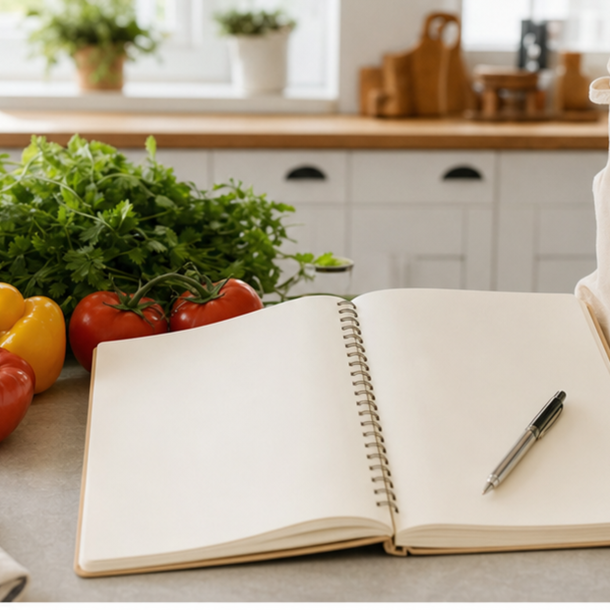
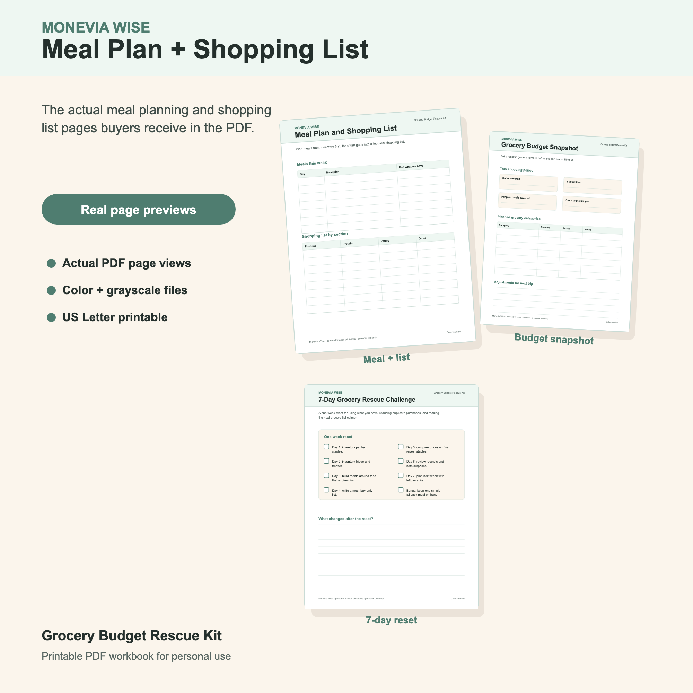

How to Meal Plan Before Grocery Shopping
A useful meal plan does not need to be fancy. It needs to tell your grocery list what to buy and what to skip.

Meal planning before grocery shopping is one of the simplest ways to make a grocery list more focused. The plan does not have to be beautiful, themed, or strict. It just needs to answer one question: what food will we realistically use before the next trip?
When the meal plan comes first, the shopping list becomes a set of missing pieces instead of a collection of everything that sounds useful.
Check Inventory Before Picking Meals
Start with the pantry, fridge, and freezer. Look for food that should be used soon, ingredients that can become a quick meal, and staples that are running low. This step keeps the meal plan connected to food you already bought.
Write down anything that can anchor a meal: frozen chicken, canned beans, pasta, rice, eggs, tortillas, vegetables, soup, or leftovers. Then build meals around those anchors before adding new ideas.

Choose Anchor Meals For The Real Week
Pick three to five meals that fit your calendar. A busy week might need sheet-pan dinners, leftovers, sandwiches, breakfast-for-dinner, or slow cooker meals. A calmer week might have room for a new recipe.
Planning seven detailed dinners is optional. What matters is having enough realistic meals to keep you from buying random backups at the store.
Write The Grocery List From The Gaps
Once meals are chosen, list only the ingredients you are missing. Group the list by section: produce, protein, dairy, pantry, frozen, household, and other. Keep must-buy items separate from nice-to-have items so you know what to cut first if prices are higher than expected.
This is also a good time to check quantities. If you need one onion for two meals, buy one onion. If the recipe needs half a bag of rice and you already have rice, it does not belong on the list.
Leave Space For Flexible Food
A meal plan can fail when it is too tight. Include easy breakfasts, lunches, snacks, and one fallback meal if your budget allows. Flexible food prevents extra trips and takeout decisions when the week changes.
The trick is to choose flexible items on purpose instead of letting them appear as impulse buys. Yogurt, eggs, fruit, tortillas, soup, salad kits, or frozen vegetables can make the week easier without turning the cart into guesswork.
Do A Short Review Before The Next Trip
Before shopping again, ask what got eaten, what was wasted, and what meal sounded good in theory but did not fit the week. That review is how your meal plan gets better over time.
A grocery routine becomes calmer when each trip teaches the next one.